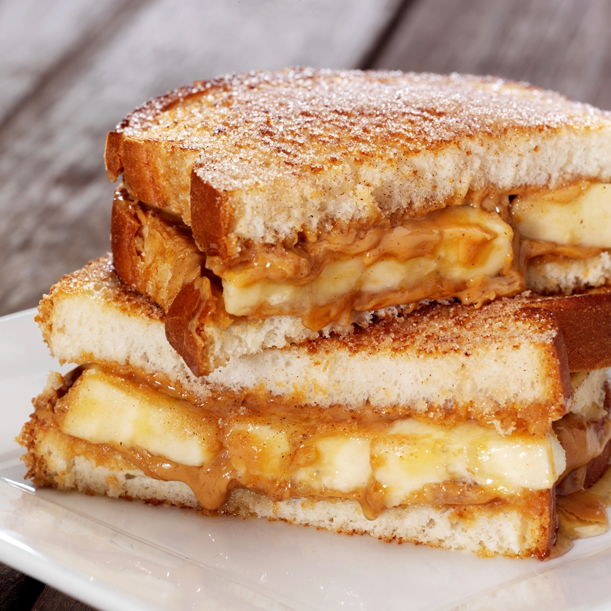

Peanut Butter and Banana Sandwich

Description
This is a super quick and simple lunch that is also filling. This sandwich was my go-to while I was in college.
Ingredients
- 2 slices of bread
- 1 whole banana
- 1 jar peanut butter
Steps
- Cover both slices of bread in as much peanut butter as you like. Be sure to spread it crust to crust. We do not want any non-buttered patches on the slices.
- Unpeel and cut the banana into dimes about a quarter inch thick. Place the cut banana dimes on one of the slices of bread.
- Take the other slice with no banana on it and place it atop of the banana'd slice.
- Viola! You've done it. Now go enjoy that ooey-gooey goodness. Be sure to have a glass of water in case you need to free your mouth from getting too peanut-buttery.
Tips
- Optionally, you can toast the slices of bread to add an extra crunch to each bite you take.
- For the sweet toothed among us, you can add a little honey to the combination for some extra sweetness.